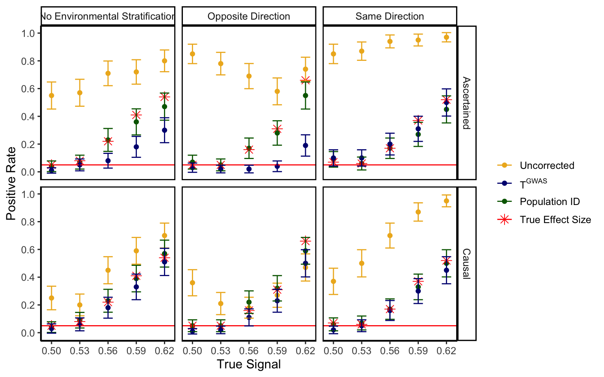

Last updated: 2022-05-02
Checks: 6 1
Knit directory: polygenic_adaptation_stratification/analysis/
This reproducible R Markdown analysis was created with workflowr (version 1.6.2). The Checks tab describes the reproducibility checks that were applied when the results were created. The Past versions tab lists the development history.
The R Markdown file has unstaged changes. To know which version of the R Markdown file created these results, you’ll want to first commit it to the Git repo. If you’re still working on the analysis, you can ignore this warning. When you’re finished, you can run wflow_publish to commit the R Markdown file and build the HTML.
Great job! The global environment was empty. Objects defined in the global environment can affect the analysis in your R Markdown file in unknown ways. For reproduciblity it’s best to always run the code in an empty environment.
The command set.seed(20201015) was run prior to running the code in the R Markdown file. Setting a seed ensures that any results that rely on randomness, e.g. subsampling or permutations, are reproducible.
Great job! Recording the operating system, R version, and package versions is critical for reproducibility.
Nice! There were no cached chunks for this analysis, so you can be confident that you successfully produced the results during this run.
Great job! Using relative paths to the files within your workflowr project makes it easier to run your code on other machines.
Great! You are using Git for version control. Tracking code development and connecting the code version to the results is critical for reproducibility.
The results in this page were generated with repository version 1557099. See the Past versions tab to see a history of the changes made to the R Markdown and HTML files.
Note that you need to be careful to ensure that all relevant files for the analysis have been committed to Git prior to generating the results (you can use wflow_publish or wflow_git_commit). workflowr only checks the R Markdown file, but you know if there are other scripts or data files that it depends on. Below is the status of the Git repository when the results were generated:
Ignored files:
Ignored: .DS_Store
Ignored: .Rhistory
Ignored: .Rproj.user/
Ignored: .snakemake/
Ignored: analysis/Calculate_TGWAS_cache/
Ignored: analysis/Polygenic_Selection_Test_cache/
Ignored: code/.DS_Store
Ignored: code/1kg/.DS_Store
Ignored: code/Calculate_Tm/.DS_Store
Ignored: code/Debug/.DS_Store
Ignored: code/PGA_test/.DS_Store
Ignored: code/PRS/.DS_Store
Ignored: code/Simulate_Genotypes/.DS_Store
Ignored: code/Simulate_Phenotypes/.DS_Store
Ignored: code/Snakefiles/.DS_Store
Ignored: code/Snakefiles/4PopSplit/.DS_Store
Ignored: code/Snakefiles/4PopSplit/Signal/
Ignored: code/Snakefiles/SimpleGrid/.snakemake/conda-archive/
Ignored: code/Snakefiles/SimpleGrid/.snakemake/conda/
Ignored: code/Snakefiles/SimpleGrid/.snakemake/locks/
Ignored: code/Snakefiles/SimpleGrid/.snakemake/metadata/
Ignored: code/Snakefiles/SimpleGrid/.snakemake/shadow/
Ignored: code/Snakefiles/SimpleGrid/.snakemake/singularity/
Ignored: data/.DS_Store
Ignored: data/1kg/
Ignored: data/cgd_example/
Ignored: data/projection_example/
Ignored: data/proof/
Ignored: output/.DS_Store
Ignored: output/Calculate_TGWAS/
Ignored: output/Calculate_Tm/4PopSplit/
Ignored: output/Calculate_Tm/SimpleGrid/A1/
Ignored: output/Calculate_Tm/SimpleGrid/B1/
Ignored: output/Calculate_Tm/SimpleGrid/E1/
Ignored: output/Calculate_Tm/SimpleGrid/E2/
Ignored: output/Calculate_Tm/SimpleGrid/E3/
Ignored: output/Calculate_Tm/SimpleGrid/E4/
Ignored: output/Calculate_Tm/SimpleGrid/E5/
Ignored: output/PGA_test/
Ignored: output/PRS/
Ignored: output/Run_GWAS/
Ignored: output/Simulate_Genotypes/.DS_Store
Ignored: output/Simulate_Genotypes/4PopSplit/
Ignored: output/Simulate_Genotypes/SimpleGrid/A1/
Ignored: output/Simulate_Genotypes/SimpleGrid/E1/
Ignored: output/Simulate_Genotypes/SimpleGrid/E2/
Ignored: output/Simulate_Genotypes/SimpleGrid/E3/
Ignored: output/Simulate_Genotypes/SimpleGrid/E4/
Ignored: output/Simulate_Genotypes/SimpleGrid/E5/
Ignored: output/Simulate_Genotypes/SimpleGrid/E6/
Ignored: output/Simulate_Genotypes/SimpleGrid/E7/
Ignored: output/Simulate_Genotypes/SimpleGrid/E8/
Ignored: output/Simulate_Genotypes/SimpleGrid/S1/
Ignored: output/Simulate_Phenotypes/
Unstaged changes:
Modified: analysis/Simulation_Methods_Reproducible.Rmd
Note that any generated files, e.g. HTML, png, CSS, etc., are not included in this status report because it is ok for generated content to have uncommitted changes.
These are the previous versions of the repository in which changes were made to the R Markdown (analysis/Simulation_Methods_Reproducible.Rmd) and HTML (docs/Simulation_Methods_Reproducible.html) files. If you’ve configured a remote Git repository (see ?wflow_git_remote), click on the hyperlinks in the table below to view the files as they were in that past version.
| File | Version | Author | Date | Message |
|---|---|---|---|---|
| Rmd | 51065b3 | jgblanc | 2022-04-29 | ready for final 4 pop run |
| Rmd | 931f818 | jgblanc | 2022-04-10 | ready to run meta |
| Rmd | b921956 | jgblanc | 2022-03-31 | ready for full run |
| Rmd | 587c88e | jgblanc | 2022-03-29 | set up simple run |
| Rmd | 73fd8f8 | jgblanc | 2022-03-24 | ready to run 2 pops |
| Rmd | 1cb2857 | jgblanc | 2022-03-03 | added conjugate gradient descent - to test tomorrow |
| html | db79e2e | jgblanc | 2022-01-03 | Build site. |
| Rmd | 1e10dec | jgblanc | 2022-01-03 | wflow_publish(c(“analysis/Simulation_Methods_Reproducible.Rmd”, |
Here I will reccord the details for the simulations presented in the main text and the supplement. I will also include the code to make the the figures.
Generate diplois individuals according to the demographic model below
See link for more simluations details.
We simulated both heritable \(h^2 = 0.3\) and non-heritable \(h^2=0\) phenotypes with a ranger of environmental confounders \(\Delta_{AB}\). Additionally, for the heritable simulations, we also conducted simulations where there was a true signal of polygenic selection by flipping the signs of causal effect sizes depending on allele frequency difference in the test panel.
See link for more simluations details.
Ascertained Sites
Causal sites
For heritable traits we can also repeat the above steps with the acual causal sites as opposed to choosing the site with the lowest p-value.
See link for more detail.
Generate diploid individuals using a stepping stone model on a 6x6 grid with the parameters below:
Parameters:
The simulation was run 100 times total.
Notes:

sessionInfo()R version 3.6.2 (2019-12-12)
Platform: x86_64-apple-darwin15.6.0 (64-bit)
Running under: macOS High Sierra 10.13.6
Matrix products: default
BLAS: /Library/Frameworks/R.framework/Versions/3.6/Resources/lib/libRblas.0.dylib
LAPACK: /Library/Frameworks/R.framework/Versions/3.6/Resources/lib/libRlapack.dylib
locale:
[1] en_US.UTF-8/en_US.UTF-8/en_US.UTF-8/C/en_US.UTF-8/en_US.UTF-8
attached base packages:
[1] stats graphics grDevices utils datasets methods base
other attached packages:
[1] ggpubr_0.4.0 latex2exp_0.5.0 forcats_0.5.1 stringr_1.4.0
[5] dplyr_1.0.7 purrr_0.3.4 readr_2.1.1 tidyr_1.1.3
[9] tibble_3.1.6 ggplot2_3.3.5 tidyverse_1.3.1 data.table_1.14.2
loaded via a namespace (and not attached):
[1] fs_1.5.2 lubridate_1.7.10 httr_1.4.2 rprojroot_2.0.2
[5] tools_3.6.2 backports_1.4.1 bslib_0.3.0 utf8_1.2.2
[9] R6_2.5.1 DBI_1.1.1 colorspace_2.0-2 withr_2.4.3
[13] gridExtra_2.3 tidyselect_1.1.1 curl_4.3.2 compiler_3.6.2
[17] git2r_0.28.0 cli_3.1.0 rvest_1.0.1 xml2_1.3.3
[21] labeling_0.4.2 sass_0.4.0 scales_1.1.1 digest_0.6.29
[25] foreign_0.8-72 rmarkdown_2.10 R.utils_2.10.1 rio_0.5.27
[29] pkgconfig_2.0.3 htmltools_0.5.2 highr_0.9 dbplyr_2.1.1
[33] fastmap_1.1.0 rlang_0.4.12 readxl_1.3.1 rstudioapi_0.13
[37] jquerylib_0.1.4 generics_0.1.0 farver_2.1.0 jsonlite_1.7.2
[41] zip_2.2.0 car_3.0-11 R.oo_1.24.0 magrittr_2.0.1
[45] Rcpp_1.0.7 munsell_0.5.0 fansi_0.5.0 abind_1.4-5
[49] lifecycle_1.0.1 R.methodsS3_1.8.1 stringi_1.7.6 whisker_0.4
[53] yaml_2.2.1 carData_3.0-4 grid_3.6.2 promises_1.2.0.1
[57] crayon_1.4.2 haven_2.4.3 cowplot_1.1.1 hms_1.1.1
[61] knitr_1.37 pillar_1.6.4 ggsignif_0.6.2 reprex_2.0.1
[65] glue_1.6.0 evaluate_0.14 modelr_0.1.8 vctrs_0.3.8
[69] tzdb_0.2.0 httpuv_1.6.2 cellranger_1.1.0 gtable_0.3.0
[73] assertthat_0.2.1 xfun_0.29 openxlsx_4.2.4 broom_0.7.9
[77] rstatix_0.7.0 later_1.3.0 workflowr_1.6.2 ellipsis_0.3.2